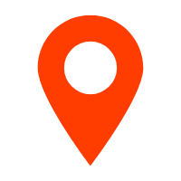

toggle navigation
设置
点聚合
打开
关闭（同时清除标记）
点标记
学校
公司
商户
范围编辑
开始编辑
结束编辑
地图标注
区域面（bg）
道路（road）
建筑物（building）
标注（point）
地图主题
标准
normal
幻影黑
dark
月光银
light
远山黛
whitesmoke
草色青
fresh
雅士灰
grey
涂鸦
graffiti
马卡龙
macaron
靛青蓝
blue
极夜蓝
darkblue
酱籽
wine
数据管理
：有业务来往
：无业务来往